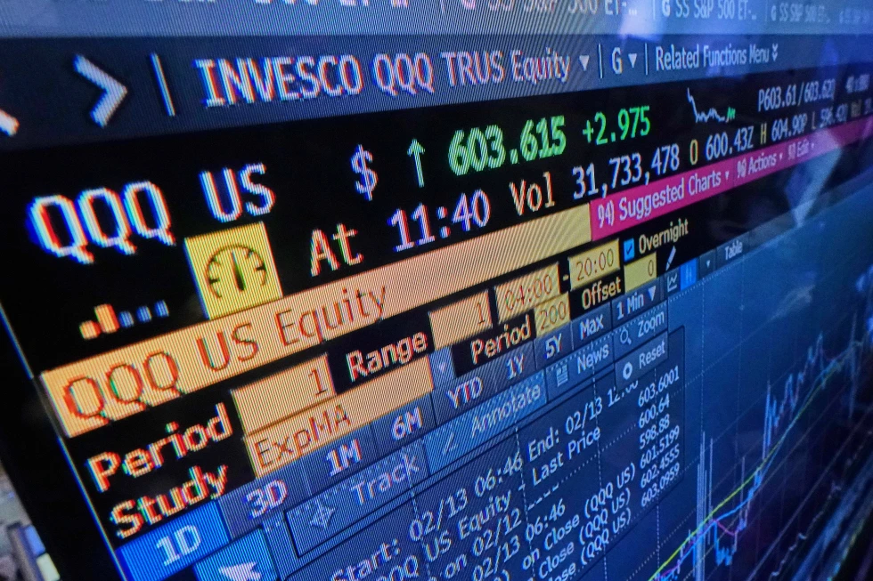

Monday, June 29, 2026
LIVE 7hrs ago
A screen on the floor of the New York Stock Exchange displays an intraday number for the QQQ, tracking the Nasdaq-100, Friday, Feb. 13, 2026.


On Wednesday, stocks in Europe and Asia went up. Japan's benchmark rose more than 1% after U.S. stocks had a quiet day.
The DAX in Germany went up 0.6% to 25,137.90, and the CAC 40 in Paris went up 0.2% to 8,379.68. The FTSE 100 in Britain was up 0.6% to 10,622.73.
The S&P 500 and Dow Jones Industrial Average futures were both up 0.5%.
For the Lunar New Year holidays, most of Asia's markets stayed closed.
The Nikkei 225 rose 1% to 57,143.84 in Tokyo after the parliament reappointed Prime Minister Sanae Takaichi. Her ruling Liberal Democrats won a landslide victory in an election on February 8.
The biggest gainers were technology businesses, with Tokyo Electron, a maker of computer chips, up 2.9%.
Japan said that its exports rose by about 17% in January compared to the same month the year before. Some of the increase was due to seasonal circumstances, but the AI boom also led to more exports of computer chips and other parts.
Shares in SoftBank Group, a big tech and energy company, fell 2.8%, adding to a loss of more than 5% on Tuesday. This was after U.S. President Donald Trump's administration said that SB Energy, a subsidiary of SoftBank, would help build what is said to be the world's largest natural gas facility near Portsmouth, Ohio.
As part of a trade pact that boosted taxes on Japanese exports to the United States by 15%, Japan promised to invest $550 billion in U.S. businesses.
The S&P/ASX 200 in Australia closed up 0.5% at 9,007.00, while India's Sensex stayed the same. The SET went up 0.6% in Bangkok.
On Tuesday, U.S. stocks went up and down.
The S&P 500 and the Dow both went up by 0.1%. The Nasdaq composite went up by 0.1%.
After Warner Bros., Paramount Skydance led the market with a 4.9% gain. Discovery said it will give Paramount a chance to make its "best and final" offer to buy the entertainment company. Paramount is seeking to beat Netflix's bid.
Warner Bros. Discovery went up 2.7%, and Netflix went up 0.2%.
General Mills, the business that makes Cheerios and Pillsbury, lost 7% on Wall Street after warning that its customers are not happy.
Several recent polls have showed that U.S. households are losing faith as they deal with high inflation, a sluggish job market, and worries about tariffs.
Some Big Tech stocks, like Alphabet, fell the most on Tuesday, with Alphabet's shares down 1.2%.
The moves were unclear, though, as Nvidia went from being one of the market's largest strengths to one of its biggest weaknesses.
As investors looked for companies that would lose money if AI changes the world and their sectors, stocks of software and other companies fell.
The market has changed a lot since last year, when the promise of AI helped U.S. stock indexes to record high after record high. Now, companies in fields as different as trucking, software, and legal services have seen investors suddenly turn against them when fears grow that AI-powered competitors would take their clients.
The businesses who are spending a lot of money on AI are also under a lot of pressure.
"So we have a market that thinks AI will destroy everything and, at the same time, give us nothing. Stephen Innes of SPI Asset Management noted in a remark that single stocks are being whipsawed like penny stocks even if we are talking about trillion-dollar balance sheets.
Bank of America did a study of fund managers around the world and found that a record number of them think firms are "overinvesting." That could mean that Nvidia and other businesses will eventually stop spending so much on processors.
In other business early on Wednesday, the price of U.S. benchmark crude oil went up 14 cents to $62.47 a barrel. Brent crude, which is used as a global benchmark, rose 15 cents to $67.57 a barrel.
The dollar was increased from 153.29 yen to 153.73 yen. The euro fell from $1.1854 to $1.1836.
The price of silver went up 3% and the price of gold went up 0.6%.
The price of Bitcoin stayed the same at roughly $68,200.